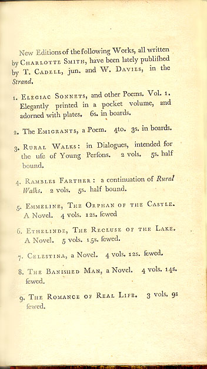

contents | previous | next [90]
117 [118] [119]  New Editions of the following Works, all written by CHARLOTTE SMITH, have been lately published by T. CADELL, jun. and W. DAVIES, in the Strand. 1. ELEGIAC SONNETS, and other Poems. Vol. 1.Elegantly printed in a pocket volume, and adorned withplates. 6s. in boards. 2. THE EMIGRANTS, a Poem.4 to. 2s. in boards. 3. RURAL WALKS: in Dialogues, intended for the use of Young Persons. 2 vols. 5s. half bound. 4. RAMBLES FARTHER: a continuation of Rural Walks.2 vols. 5s. half bound. 5. EMMELINE, THE ORPHAN OF THE CASTLE. A Novel.4 vols. 12s sewed 6. ETHELINDE, THE RECLUSE OF THE LAKE. A Novel. 4 vols. 12s. sewed. 7. CELESTINA, a Novel.4 vols. 14s. sewed. 8. THE BANISHED MAN, a Novel.4 vols. 14s. sewed. 9. THE ROMANCE OF REAL LIFE.3 vols. 9s sewed. |